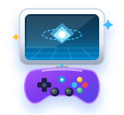
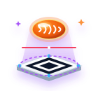

Jelajahi dunia sel haiwan dan sel tumbuhan melalui pengalaman 3D dan Augmented Reality (AR) yang menyeronokkan!
Terokai makmal maya, temui 8 stesen organel dan selesaikan cabaran sains.

Gunakan kamera, putar peranti dan cari stesen organel dengan bantuan Smart Radar.
Imbas kad penanda untuk memunculkan model organel 3D dan menjawab cabaran.

🔬 Jom jadi Saintis Muda! Terokai makmal 3D, selesaikan 8 cabaran dan buka pintu rahsia! 🧪
Oh tidak! Sistem tenaga Makmal ARSELNEL telah mengalami kerosakan misteri!
Lapan stesen organel di dalam makmal telah kehilangan tenaga dan pintu menuju ke Bilik Teras Sel telah terkunci.
Sebagai Saintis Muda, anda telah dipilih untuk menyelamatkan makmal ini! Terokai makmal 3D, cari 8 stesen organel, pelajari fungsi setiap organel dan jawab cabaran sains.
Setiap cabaran yang berjaya diselesaikan akan memulihkan satu bahagian tenaga makmal.
Apabila kesemua 8 stesen berjaya dipulihkan, pintu rahsia akan terbuka!
Masuk ke Bilik Teras Sel dan aktifkan Teras Tenaga Utama untuk menyelamatkan Makmal ARSELNEL!
Gunakan joystick untuk berjalan di dalam makmal 3D. Pada komputer, gunakan WASD.
Pusingkan telefon atau iPad untuk melihat kiri, kanan, atas dan bawah. Anda juga boleh menggunakan kawalan sentuhan.
Terokai makmal dan cari 8 stesen organel yang tersembunyi.
Dekati stesen dan tekan Teroka untuk mempelajari struktur serta fungsi organel.
Jawab soalan sains untuk memulihkan tenaga setiap stesen.
Selepas 8 cabaran selesai, cari pintu rahsia dan masuk ke Bilik Teras Sel!
Main di kawasan yang selamat dan selesa. Anda boleh bermain secara duduk. Gunakan joystick untuk bergerak dan pusingkan peranti atau sentuh skrin untuk melihat sekeliling.
Pegang telefon atau iPad pada kedudukan yang selesa, kemudian tekan Kalibrasi Pandangan untuk menetapkan arah pandangan anda. Anda juga boleh bermain menggunakan kawalan sentuhan.
Anda berjaya memulihkan kesemua 8 stesen organel dan mengaktifkan Teras Tenaga Utama!
Makmal ARSELNEL kini kembali berfungsi sepenuhnya! Semua sistem tenaga dan kestabilan sel telah pulih.
🔬 Jom jadi Saintis Muda! Terokai dunia AR, cari 8 organel dan selamatkan Dunia Sel! 🧬
Oh tidak! Dunia Sel ARSELNEL sedang mengalami gangguan misteri!
Lapan stesen organel telah kehilangan tenaga. Sebagai Saintis Muda, anda perlu mencari setiap stesen menggunakan kamera AR dan menyelesaikan cabaran sains.
Berjaya pulihkan semua 8 stesen? Sebuah Peti Harta Karun ARSELNEL rahsia akan muncul untuk anda cari!
Benarkan kamera dan sensor supaya anda boleh melihat Dunia AR!
Hadapkan telefon ke depan dan tekan Kalibrasi untuk menetapkan arah.
Pusing telefon ke kiri, kanan, atas dan bawah untuk mencari 8 stesen!
Tekan Teroka untuk melihat model organel 3D dan mempelajari fungsinya.
Jawab soalan sains untuk memulihkan tenaga setiap organel (0/8 stesen)!
Selepas 8 stesen selesai, gunakan radar dan cari peti rahsia di aras bawah!
Main di kawasan yang selamat dan terang. Pegang telefon dengan stabil, perhatikan persekitaran dan tidak perlu berjalan untuk mencari stesen AR.
Panduan kawalan dan penerokaan Makmal Eksplorasi Sel ARSelNel
Pilih pengalaman pembelajaran yang paling sesuai untuk peranti anda.
Terokai keseluruhan makmal 3D secara bebas menggunakan papan kekunci (WASD), tetikus atau joystick telefon. 8 stesen penuh dengan model 3D, kuiz dan lencana tanpa memerlukan kamera.
Semua Laptop, Komputer, Tablet & Telefon • Tanpa KameraHalakan kamera telefon atau iPad ke sekeliling bilik. Pusing peranti 360° untuk mencari 8 stesen organel maya mengikut arah mata angin dengan bantuan Smart Radar & Misi Akhir.
Kamera + Sensor Giroskop • Smart Radar 8 StesenSusun 8 kad penanda AR boleh cetak di atas meja. Apabila kamera mengesan kad, model 3D organel muncul tegak di atas kad tersebut lengkap dengan kuiz dan lencana.
Penjejakan Pose Kad 6DOF • iPad Safari & Semua Kamera💡 Anda boleh kembali ke Lobi Makmal Sains pada bila-bila masa dengan menekan butang Kembali.
Pelayar tidak dapat mengakses kamera peranti. Anda masih boleh menikmati keseluruhan pengembaraan makmal sel dalam Mod Jelajah 3D!
Sains Tingkatan 1 KSSM • Bab 2: Sel Sebagai Unit Asas Hidupan
Adakah anda pasti ingin keluar dari mod ini? Anda akan kembali ke Lobi Makmal Sains dan kemajuan sesi anda akan disimpan.
🎉 Syabas, Saintis Muda! Peti Harta Karun ARSELNEL telah muncul di lokasi rahsia.
Peti ganjaran telah dikunci pada ruang AR di lokasi berasingan. Gunakan Smart Radar dan pusingkan peranti anda untuk menjejakinya!
Misi Menyelamatkan Dunia Sel telah berjaya disempurnakan! Kesemua 8 organel pulih bertenaga dan Dunia Sel kembali stabil sepenuhnya.
Anda berjaya menyelesaikan Misi Jelajah Dunia Sel dan menemui Harta Karun ARSELNEL!